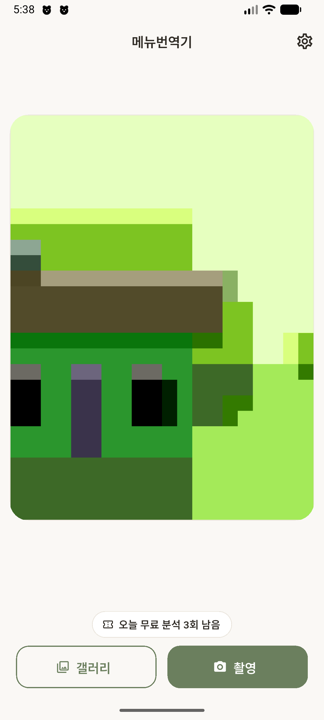
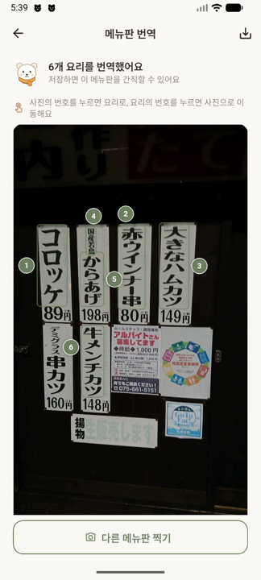
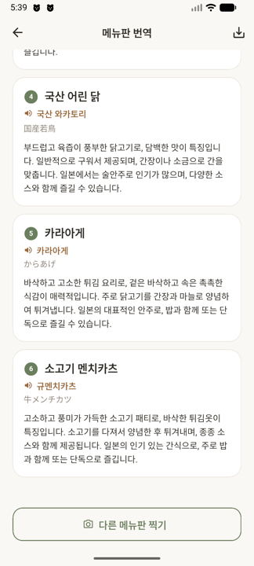

📸 찍고 끝메뉴판 사진 한 장이면 요리 이름을 찾아 번역해 드려요.
One photo of the menu is all it takes.
🔊 주문까지현지 발음 표기로 그대로 읽어 주문할 수 있어요.
Pronunciation guides you can read out loud to order.
🍲 설명과 가격요리마다 재료·맛 설명과 메뉴판의 가격을 함께 보여드려요.
Each dish comes with a description and its printed price.
⚠️ 번역과 알레르기·식이 정보는 참고용입니다. 알레르기가 있다면 반드시 매장에 직접 확인하세요.
Translations and allergen hints are best-effort. Always confirm allergens with restaurant staff.
이렇게 씁니다 · How it works

① 찍습니다남은 무료 횟수가 아래에 보여요 Point and shoot

② 번호가 붙습니다번호를 누르면 그 요리 설명으로 Tap a number to jump

③ 설명이 도착합니다완성되는 대로 한 장씩 Cards arrive one by one
실제 결과 · A real example
교토의 어느 튀김집. 일본어 메뉴판을 한국어로 읽은 실제 출력입니다.
메뉴판 원문
가격
요리 이름
🔊 이렇게 말하세요
赤ウインナー串
89円
붉은 소시지 꼬치
아카 우인나 쿠시
大きなハムカツ
198円
큰 햄카츠
오오키나 하무카츠
コロッケ
80円
크로켓
코로케
国産若鳥
149円
국산 어린 닭
코쿠산 와카토리
牛メンチカツ
소고기 멘치카츠
규 멘치카츠
발음은 일본어 소리를 한글로 적습니다. 国産若鳥은 한국 한자음 "국산약조"가 아니라 일본어 그대로 "코쿠산 와카토리" — 그래야 가게에서 통합니다.
Pronunciations follow the menu's own language, written in your alphabet, so you can read them out loud and be understood.
이용 요금 · Pricing
7일 이용권 · 7-day pass
매일 5회까지 무료입니다 — 회원가입도, 로그인도 없이. 매일 자정에 다시 채워집니다. 더 쓰고 싶으면 7일 이용권(₩3,000, 스토어 통화 기준)으로 기간 내 자유롭게 이용하실 수 있습니다. 자동 갱신이 아니며, 7일이 지나면 그냥 만료됩니다.
5 free analyses every day — no sign-up, no login; the allowance resets at midnight. For more, a single 7-day pass (₩3,000 or your store's local price) covers unlimited use within fair limits. Nothing auto-renews — the pass simply ends after 7 days.
계정과 개인정보 · Accounts & privacy
로그인 없이 모든 기능을 쓸 수 있어요. 로그인(Apple·Google·카카오)은 다른 기기에서 산 이용권을 불러올 때만 필요합니다. 사진은 서버에 저장하지 않습니다.
No login required — sign in (Apple, Google, Kakao) only to restore a pass across devices. Your photos are never stored on our servers.